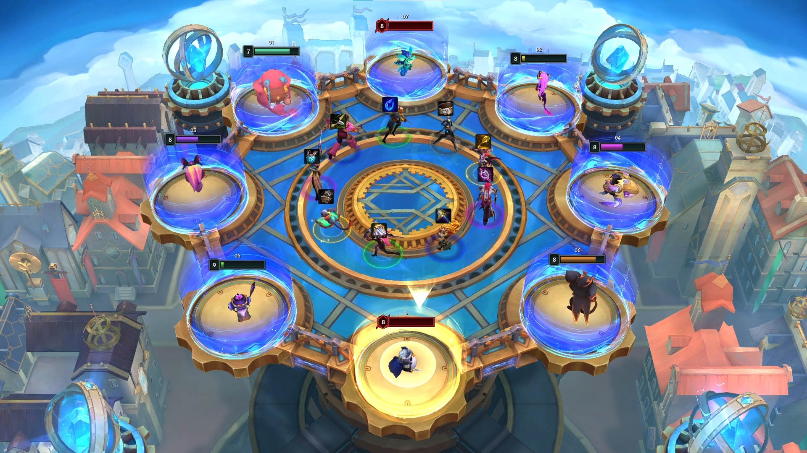
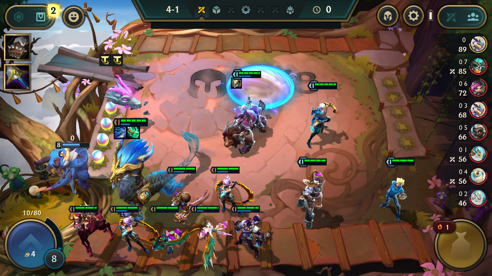

Team Up for Double Up!
Duplas Dinâmicas, o novo laboratório 2v2v2v2 do Teamfight Tactics, vem aí na segunda atualização (11.23) de Bugigangas e Engenhocas em 17 de novembro! Tudo o que você precisa para jogar é achar uma dupla — então, antes que pergunte: sim, eu adoraria ser a sua! Ah, você já tem uma? Então é melhor enviar logo esse artigo para ela, porque estamos prestes a contar tudo o que há de novo sobre Duplas Dinâmicas!
Como vencer: não perca
Assim como no TFT normal, mas de uma forma diferente, a vitória é da pessoa dupla que sobreviver até o fim. Mesmo que dois totais sejam exibidos, você e sua dupla vão compartilhar a mesma quantidade de Vida. Sim, isso significa que toda vez que sua dupla sofrer dano, você sofrerá dano — e vice-versa. Parece arriscado? Não se preocupe! Na primeira vez que sua Vida compartilhada chegar a 0, ela voltará para 1. Qualquer derrota depois disso eliminará a dupla. Vocês saberão quando isso estiver prestes a acontecer graças a um indicador visual na barra de Vida de cada estrategista. Como nesse momento a coisa fica séria, um texto de aviso também será enviado, só para garantir.

Como não perder: Arsenal Auxiliar e Runa da Lealdade
Agora que você já sabe como funciona a derrota, vamos falar sobre como evitá-la com o "Arsenal da Amizade", quer dizer... o Arsenal Auxiliar. No estágio 2-5 e no estágio 6-2, uma pessoa de cada dupla verá um Arsenal Auxiliar, e poderá presentear a dupla com componentes de itens e ouro. O Arsenal Auxiliar do estágio 6-2 tem espólios ainda mais legais, como itens completos, Emblemas de característica e a Runa da Lealdade (falaremos mais sobre isso já, já)! "Mas espera aí, vou dar presentes sem receber nada em troca?!" Relaxa! Sua dupla terá a oportunidade de retribuir o favor nos estágios 2-6 e 6-3.

Então, você escolheu a dupla perfeita para Duplas Dinâmicas — e eu fico superfeliz por vocês! —, mas ela sabe como usar a Runa da Lealdade? Não? Sério mesmo? Talvez não seja tão perfeita assim... De qualquer forma, todo mundo recebe a Runa da Lealdade no início do jogo, no estágio 4-2 e como uma opção no segundo Arsenal Auxiliar. É um consumível que, quando utilizado em um Campeão, o envia com todos os seus itens para o tabuleiro da sua dupla (em uma bolha de espólios). Se o Campeão tiver itens, eles serão liberados no tabuleiro, permitindo que sua dupla os utilize como achar melhor. Legal, né?